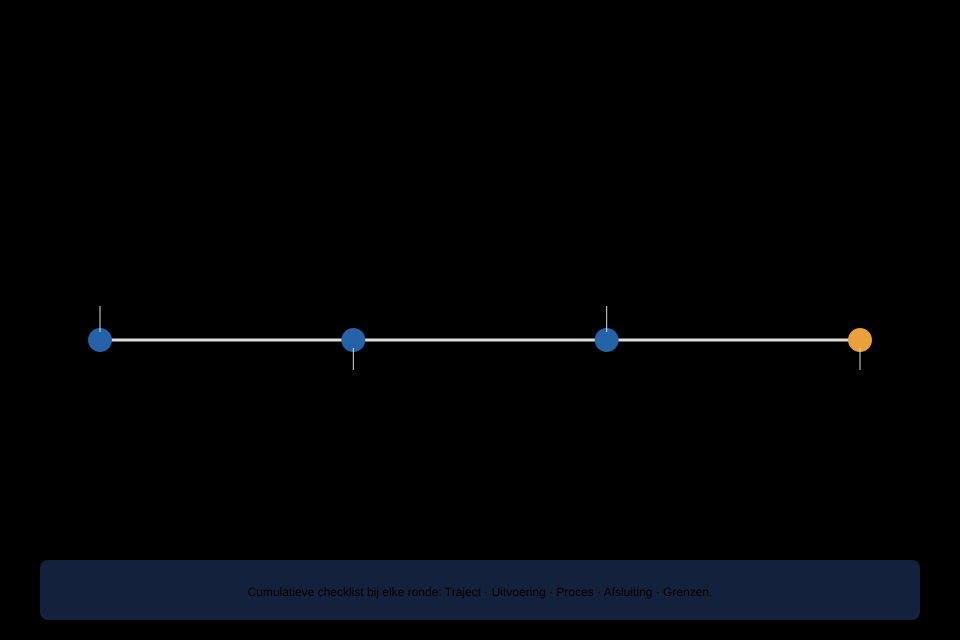

Cursus Hypnose · Niveau 3 (Professioneel) · Deel 23 van 24
Oefen- marathon.
Een praktijkdag: vier rondes onder tijdsdruk, met peer review volgens een vaste structuur en een cumulatieve checklist. De laatste ronde is een grensgeval — bewust als sluitstuk, omdat de verleiding tot routine daar het grootst is.
4secties
±42 minleestijd + werkboek
1controlevragen
N3Professioneel
Vuistregel bij tijdsdruk. Liever een korter, compleet protocol dan een langer, onvolledig protocol. Kort en compleet werkt; lang en onvolledig niet.
Niveau 3 · Professioneel: ① Het zesfasenprotocol → ② Spoor B volledig → ③ Kinderen en gezin → ④ Ethiek en grenzen → ⑤ Werken in context → ⑥ Oefenmarathon (hier) → ⑦ Capstone
01
Waarom een oefenmarathon
⏱ 8 min
Op een dag met meerdere cliënten wisselt u tussen totaal verschillende vragen, met weinig ruimte om rustig na te denken. Dit deel simuleert dat tempo bewust, met vier rondes achter elkaar. Het doel is niet perfectie onder druk — het is zien wat er onder druk overeind blijft.
02
De vaste peer-review-structuur
⏱ 10 min
Elke ronde eindigt met feedback in een vaste, drieledige vorm:
Wat werkte, specifiek benoemd.
Wat sterker kon, met een concreet alternatief.
Eén vraag in plaats van een oordeel.
Observatoren gebruiken de cumulatieve checklist: Traject, Uitvoering, Proces, Afsluiting, Grenzen (deel 17/18) — dezelfde standaard als bij de eindtoetsen.
03
De vier rondes
⏱ 16 min
Ronde 1 — Verse casus. Een nieuwe spoor A-vraag, volledige intake tot en met een eerste interventie, binnen een beperkte tijd. Accent: snelheid van aansluiten zonder de intake af te raffelen.
Ronde 2 — Trajectmoment. Een tussentijds moment in een fictief lopend traject. Accent: aansluiten bij een geschiedenis die u net krijgt aangereikt.
Ronde 3 — Groepselement. Een korte, groepsgerichte opening, gevolgd door een individueel vervolg. Accent: het onderscheid tussen groeps- en individuele aandacht bewaken.
Ronde 4 — Grensgeval. Elk drietal trekt een gesloten kaart met een subtiel grensgeval, gebaseerd op patronen uit de hele cursus. Beoordeeld wordt of u de grens herkent en correct afhandelt, met het ethisch kompas (deel 21) als denkkader. De observator telt eventuele Grenzen-nee's.
Waarom als laatste: onder tijdsdruk, na drie eerdere rondes, is de verleiding om routinematig door te gaan het grootst.

Figuur 23-1 — de vier rondes van de oefenmarathon, met de grensgeval-ronde als sluitstuk
Controlevraag
Uit Deel 23 — reader §23.4
1Waarom is de grensgeval-ronde bewust als vierde en laatste ronde gepland, niet als eerste?Toon antwoord
Onder tijdsdruk, na drie eerdere rondes, is de verleiding om routinematig door te gaan het grootst — en precies dan moet een grensgeval alsnog worden opgemerkt. Dit is een realistische simulatie: in de praktijk komen grensgevallen zelden op een rustig moment, met alle aandacht paraat.
04
Zelfevaluatie na de marathon
⏱ 8 min
Welk patroon zag u bij uzelf terugkomen over de vier rondes heen? Werd u haastiger naarmate de dag vorderde? Welke fase van het protocol sloeg u het eerst over onder druk?
Dit is directe voorbereiding op het capstone-deel: wie weet waar hij onder druk zwakker wordt, kan dat gericht meenemen naar de laatste zelfstandige sessie van de cursus.